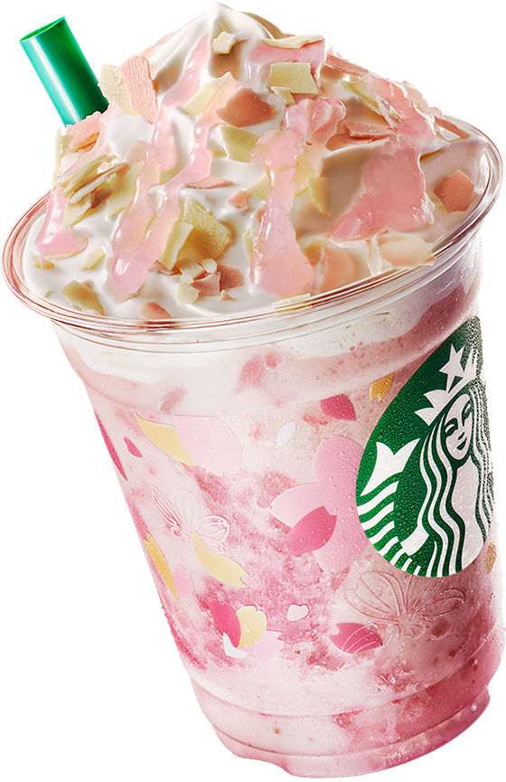

Bebidas
- Espresso: café filtrado, espresso tradicional ou macchiato, espresso com chantilly, espresso colletion avelã, espresso coletion brigadeiro.
- Cafés: café americano, café com leite, prensa francesa.
- Clássicos: café mocha ou café mocha branco, doce de leite latte, caramelo macchiato, cappuccino tradicional, cappuccino canela, cappuccinochocolate.
- Chocolates:chocolate clássico, chocolate branco.
- Cold brew: nitro, tradicional, com leite, baunilha.
- Frappuccinos: chocolate ou chocolate branco, super morango, brigadeiro, brigadeiro(base café), doce de leite, doce de leite (base café), baunilha, café, caramelo, mocha ou mocha branco, choco chip, macha.
- Chás: chá quente ou gelado (chá verde, preto ou chai), chá gelado com limonada e blueberry(chá verdeou preto com blueberry), chá gelado com limonada(chá verde, preto ou chai com limonada), chá latte quente ou gelado(chá verdeou chai com leite).
Salgados
- Salgados: pão de queijo (tradicional ou multigrãos), torrada petrópolis, coxinha, croissant (presunto e queijo, frango ou multigrãos com peru e cream cheese), empanada (carne ou integral com peito de peru e ricota), mini pão de queijo.
- Sanduíches: toast de presunto e muçarela, croque monsieur, toast de peru.

Doces
- Doces: roll de canela, cookie de baunilha ou chocolate, bolo red velvet, ring donuts (chocoberry, creme de avelã ou doce de leite), donuts (creme), brownie espresso, muffin de chocolate ou blueberry.